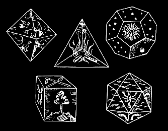

Platonik cisimler, yüzleri sadece eşkenar üçgen ya da sadece düzgün dörtgen ya da sadece düzgün beşgen olan üç boyutlu nesnelerdir. Kendilerini kesmezler ve her bir köşesinde aynı sayıda (aynı çeşit) çokgen buluşur. Bu özelliklere sahip yalnızca 5 adet cisim olduğu, daha 2000 yıl önce Öklit tarafından kanıtlanmıştır.
Sağdaki programda bu cisimleri görebilir, katlayıp açarak düzgün çokgenlerin nasıl yapıştığını inceleyebilirsiniz.
Daha fazla araştırma için, simetriler, süslemeler ve Platonik cisimler üzerine etkileşimli açıklamalar içeren iOrnament programına bakabilirsiniz (iPhone ve iPad için):
Bağlantı: www.science-to-touch.com/iOrnament
|
 |
Eski çağlarda, beş Platonik cismin, su, ateş, hava, toprak ve kozmos ile bağlantılı olduğu düşünülüyordu.